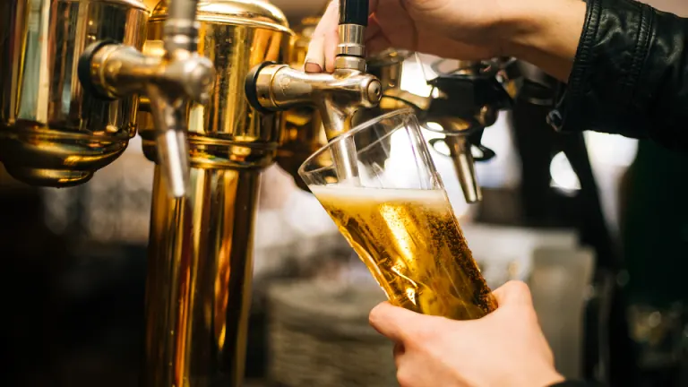
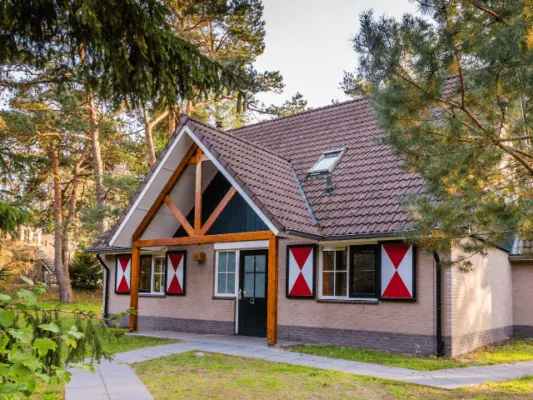
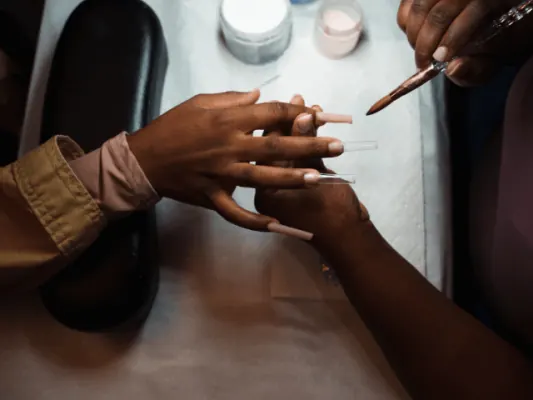
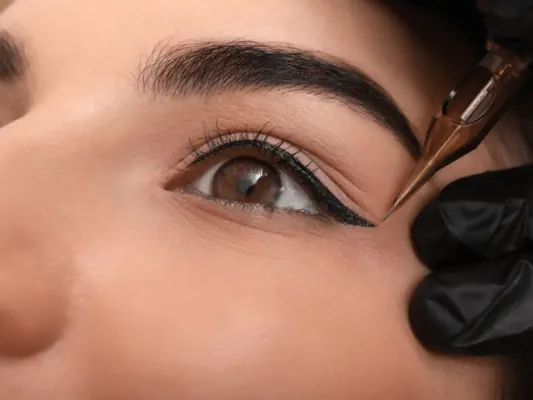

Gidsen over Nijmegen
Alles over één onderwerp op één plek. Elke gids bundelt onze artikelen, tips en antwoorden op veelgestelde vragen.

Het centrum van Nijmegen
Pleinen, Waalkade, winkels, markten en parkeren in de binnenstad.
16 artikelen
Natuur, parken en wandelen rond Nijmegen
Ooijpolder, Duivelsberg, Mookerheide, Sint-Jansberg, Heumensoord en de stadsparken.
12 artikelen
Evenementen in Nijmegen door het jaar
Jaarkalender: carnaval, Koningsdag, Vierdaagse, kermis, Zevenheuvelenloop en kerst.
16 artikelen
Uitjes en activiteiten in Nijmegen
Escape rooms, op het water, met kinderen, workshops en dagjes uit.
20 artikelen
Sporten en zwemmen in Nijmegen
Zwembaden, buitenwater, hardlopen, schaatsen, dansen en N.E.C.
16 artikelen
Over de grens: Kleef, Emmerik, Goch en Kranenburg
Kleef, Emmerik, Goch en Kranenburg: winkelen, kerstmarkten en de Rijn.
9 artikelen
Parkeren en bereikbaarheid in Nijmegen
Parkeergarages, tarieven, P+R, station, bus en fiets.
12 artikelen
Restaurants in Nijmegen
De beste adressen per keuken en per gelegenheid, van lunch tot diner.
28 artikelen
Lunch, ontbijt en high tea in Nijmegen
Lunchrooms, ontbijt en brunch, high tea en high wine.
9 artikelen
Cafés in Nijmegen
Historische kroegen, biercafés, eetcafés en uitgaan.
5 artikelen
Uitgaan in Nijmegen: kroegen, clubs en bars
Kroegen, biercafés, clubs, bars en eetcafés.
12 artikelen
Musea in Nijmegen
Musea, historische kerken, film en cultuur.
11 artikelen
Film, theater en concerten in Nijmegen
Bioscopen, Stadsschouwburg, De Vereeniging, Doornroosje en festivals.
9 artikelen
Trouwen in Nijmegen
Trouwlocaties, fotograaf, jurk, ringen, muziek en een handige checklist.
16 artikelen
Zaal huren in Nijmegen
Locaties voor feesten, vergaderingen en teamuitjes.
4 artikelen
Nijmeegse Vierdaagse
Afstanden, voorbereiding, blessures voorkomen en overnachten.
5 artikelenFotografie in Nijmegen
Een fotograaf kiezen en de mooiste fotospots.
4 artikelen
Overnachten in Nijmegen
Hotels, Airbnb's, vakantieparken en campings.
10 artikelen
B&B in Nijmegen
Bed and breakfasts in Nijmegen, Groesbeek en Wijchen.
3 artikelenCampings in Nijmegen
Campings, Vierdaagsecampings, camperplaatsen en een paklijst.
5 artikelen
Kappers in Nijmegen
Kapsalons, barbiers en tips voor je haar.
7 artikelen
Massage in Nijmegen
Soorten massage, salons en wat je kunt verwachten.
3 artikelen
Nagelsalon in Nijmegen
Manicure, gellak en nagelverlenging, en een goede salon kiezen.
2 artikelen
Pedicure in Nijmegen
Luxe en medische pedicure, en voetverzorging thuis.
4 artikelen
Permanente make-up in Nijmegen
Hoe het werkt, voor wie het is en waar je op let.
6 artikelen
Sauna en wellness in Nijmegen
Thermen, spa, massage en verzorging.
8 artikelen
Studeren in Nijmegen
Een kamer vinden en wegwijs worden in de stad.
7 artikelen
Cursussen in Nijmegen
Talen, edelsmeden, houtbewerking, fotografie en meer.
14 artikelenOndernemen in Nijmegen
Starten, subsidies, financiering, marketing en netwerken.
15 artikelenWinkelen in Nijmegen
Speciaalzaken, kringloop en waar je parkeert.
10 artikelen
Kringloop en tweedehands in Nijmegen
Kringloopwinkels, vintage kleding, antiek en markten.
5 artikelen